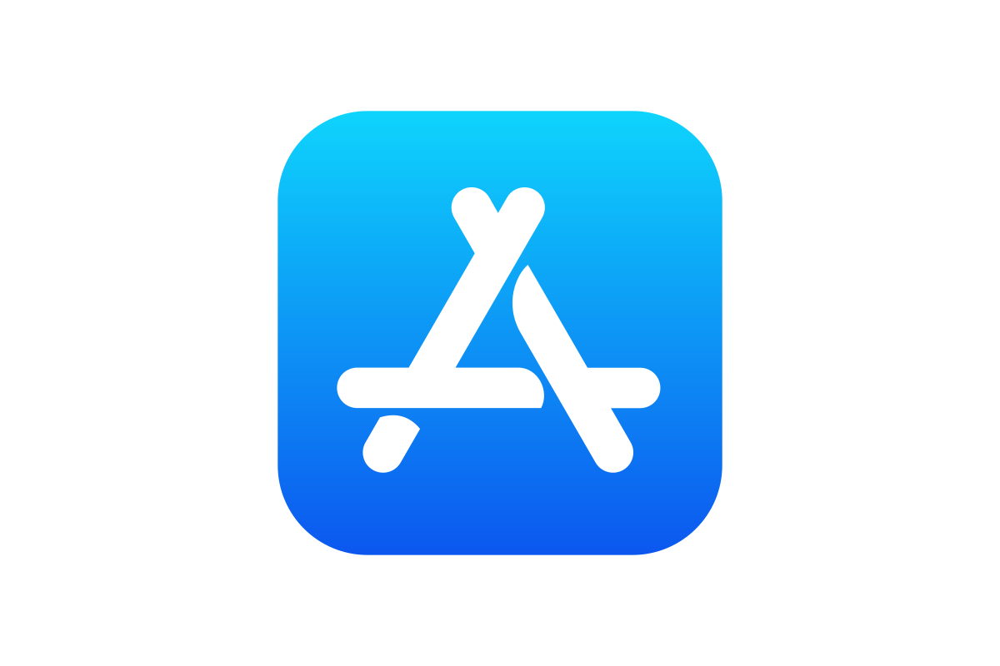

Available on the App StoreProcrastop
Every task has a due date, and time sorts the list. Nothing to drag or reorder — you just finish.
Privacy
Procrastop has no account and no server. Read exactly what stays on your iPhone and what never leaves it.
Terms
The plain terms that apply when you use Procrastop.
Support
Questions, bugs, or feedback go straight to the developer by email.
Delete your data
There is no account to close. Here is how to remove tasks, or every trace of the app, from your iPhone.
FAQ
How the three timeframes work, why notifications are requested, and where your tasks live.
Changelog
What is in each release of Procrastop.